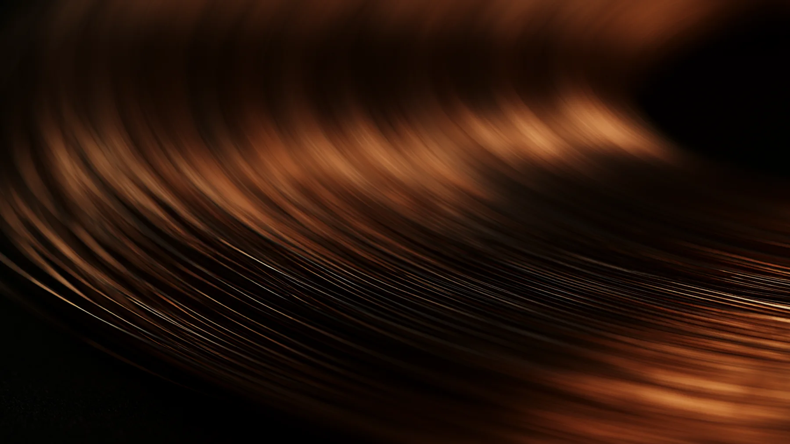

Příběhy PAULUS · Krija jóga
Dechová technika. Tajné zasvěcení. Očista. Rituál.Pod názvem krija jóga se v různých textech a liniích označovaly velmi odlišné formy praxe. Než se dá o krija józe mluvit, je potřeba vědět, o které z nich je řeč. A jedna z nich stojí na principu, který obrací běžnou představu o meditaci naruby.
01 · Tlak
Každá bublina je jedna myšlenka. Klepněte na kteroukoli a zatlačte ji zpátky. Pak sledujte ostatní.
Klepněte na kteroukoli bublinu.
Potlačení není totéž co ztišení. Satjánanda upozorňuje, že snaha myšlenky přímo zastavit vede u většiny lidí k vnitřnímu rozkolu, protože jedna část mysli chce disciplínu porušit a druhá ji chce udržet.
Přirovnává to k tlačení na vyboulené místo na nafukovací matraci. Vzduch se jen přesune jinam.
V komentáři k Hathajógapradípice stojí otázka, proč vlastně jako první bojujeme s myslí, když na to nemáme sílu, a jen si tím vytváříme vzorec nepřátelství vůči sobě samým.
Jeho krija jóga proto nezačíná požadavkem, aby mysl přestala být pohyblivá. Dělá něco jiného.
02 · Pohyb
Satjánanda k tomu používá příměr neposedného dítěte. Zkuste obojí.
Dítě sedí a začíná se cukat.
Když neposednému dítěti přikážete sedět bez hnutí v koutě, začne křičet. Když mu dáte hračku a necháte ho si hrát, samo se po čase unaví a usne.
Mysl nemusí nejdřív přestat být pohyblivá. Dostane přesnou dráhu, po které se může pohybovat.
Tou dráhou jsou v krija józe vnitřní body, dech, mudry a mantry.
Její instrukce zní, že se s myslí nemá bojovat a její pohyb se nemá potlačovat. Místo toho se ve vědomí záměrně vytvoří dynamická činnost.
03 · Dráha
Přední vzestupná aróhan a páteřní sestupná avaróhan. Spusťte rotaci, sledujte bod a všímejte si, co se mezitím děje s ostatními myšlenkami.
Pozornost stojí na jednom místě.
Mysl moderního člověka je dynamická a roztěkaná. Když ji donutíte hledět na jeden statický bod, vzbouří se. Krija jóga její touhu po pohybu uspokojí tím, že ji nechá cestovat mezi body.
Čím přesněji sledujete dráhu, tím méně místa zbývá pro souvislý řetězec ostatních myšlenek.
V satjánandovském výkladu jsou tyto vnitřní dráhy spojovány s pránickými proudy a s činností autonomního nervového systému. Platí k tomu jógové pravidlo, že kam jde pozornost, tam teče prána.
Jde o tradiční a moderně jógový model praxe, nikoli o anatomický popis nervových drah.

04 · Význam
Čtyři různá použití téhož názvu. Dvě pocházejí z textů, dvě z živých linií praxe. Klepněte na kteroukoli.
Než řeknete krija jóga, je potřeba vědět, o které mluvíte.
05 · Pořadí
Tak, jak je učí Bihar School. Uvádíme to proto, aby bylo vidět, o jak propracovaný systém jde, ne jako návod. Klepnutím se u každé krije rozbalí jedna věta.
Obrácený postoj, ve kterém se vede nektar z manipúry do višuddhi.
Rychlá rotace pozornosti drahami pro lokalizaci čaker.
Vedení zvukového vědomí páteří se zpěvem mantry.
Vedení dechového vědomí s khéčarí a unmaní mudrou.
Vedení vědomí s vnitřním nasloucháním zvuku sóham a hamsó.
Sed se stlačením hráze, zádrží dechu a třemi mudrami.
Výdechová obměna s trojicí bandh a pohledem na špičku nosu.
Sed s otevřenýma očima pro vnímání jemné vůně.
Rytmické dopadání těla v lotosu, které stimuluje múládháru.
Uzavření devíti bran, začátek fáze koncentrace.
Vizualizace hada kousajícího se do vlastního ocasu.
Vizualizace lotosu rostoucího od múládháry k sahasráře.
Pití nektaru, vzpřímená obměna první krije.
Probíjení jednotlivých čaker.
Vize centrálního kanálu jako světelné trubice.
Obětování prány do vyšších center.
Vizualizace vzestupu kundaliní z múládháry.
Naprostá nehybnost a pozorování přirozeného dechu.
Sublimace tvořivé energie a její vedení vzhůru.
Meditace, tedy stav, ne technika.
Tato sestava není nabídka technik. Pořadí je součástí metody.
Sestava kopíruje přirozený postup vědomí. Prvních devět krijí se provádí s otevřenýma očima, aby praktikující neupadl do snění. Poslední krija už není technika, kterou by šlo cvičit vůlí.
Bihar School uchovává soubor sedmdesáti šesti kundaliní krijí. V běžné praxi se učí těchto dvacet.
06 · Příprava
Komentátor Hathajógapradípiky používá drsnou metaforu. Přidejte energii a sledujte obě nádoby.
Zanesené dráhy
Pročištěné dráhy
Obě nádoby jsou zatím prázdné.
Máte plastovou láhev, jejíž stěny jsou zevnitř pokryté nánosem a oslabené, a pokusíte se ji naplnit litrem silné kyseliny. Stanou se dvě věci. Litr se tam kvůli nánosům nevejde a láhev se pod silou kyseliny rozloží.
Komentář ten obraz používá jako varování před intenzitou bez přípravy. V tradičním modelu se nejdřív připravují nádí, dech, tělo a mysl a teprve potom se zvyšuje síla energetických technik.
Láhev je metafora toho pořadí, nikoli popis toho, co se v těle doslova děje. Právě proto tradice trvá na přípravě.
Hranice
Satjánanda u těchto praxí opakovaně zdůrazňuje psychickou stabilitu a postupnou přípravu. V jeho rámci není vhodné s kundaliní jógou začínat během akutní psychické nebo emoční nestability, protože techniky jsou silné a stav mohou zhoršit.
Tato stránka je výklad, nikoli návod k praxi. Intenzivní dechové techniky, zádrže, bandhy ani kundaliní krije zde nejsou určeny k samostatnému napodobování.
Otevřená otázka
Krija jóga nezačíná tichem. Začíná přesně uspořádaným pohybem pozornosti. Dech, mantra, vnitřní dráha, mudra, další bod. Mysl dostává činnost tak dlouho, až už ji nepotřebuje.
Pohyb tedy není cílem. Je cestou k místu, kde může pohyb ustat.
Co se stane, když mysli místo zákazu dáte přesnou cestu?
Na to se nedá odpovědět z textu. Pozná se to až na tom, co se stane, když si sednete.
Kam dál
Autor a zdroje
Text a odborná revize: Daniel Paulus
Lektor jógové filozofie, meditace a hlubinné psychologie. Poslední revize v srpnu 2026.
Tvrzení na této stránce jsou označena jako doložený fakt, tradiční model nebo osobní zkušenost. Sestava krijí, tři fáze i uzly jsou tradiční modely, nikoli měřitelné veličiny.